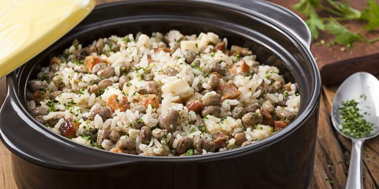

Baião de Dois

Description
Baião de Dois is a very typical and popular dish from Brazil's northeast,
is consisted of rice, bean, bacon and some regional ingredients like the curd cheese.
Ingredients
- 1,1 lb of green beans
- 1 grated onion
- 2 crushed garlic clove
- 3 tablespoons of oil
- 1/2 tablespoon of chopped coriander
- 2 and 1/2 cups of rice, washed and drained
- 1/2 cup of chopped bacon
- 1 cup of chopped curd cheese
- 1 tablespoon of salt
Steps
- In a pan, cook the green beans (soaked the night before) with 3 liters of cold water for about 40 minutes.
- In another pan, heat the oil and brown the bacon, onion and garlic. Add coriander and rice.
- Sauté and add the cooked beans and salt.
- Cover the pan and and cook over low heat for about 15 minutes or until the rice is cooked.
- Mix the chopped curd cheese and cover the pan so that the steam melts the cheese. Serve.